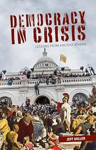
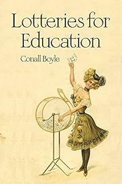

The People's Parliament (UK)
Evolution not Revolution
INTRO
22 Feb, 2025
Note: I wrote this pretty much as it came to me, in one go, so it's somewhat disorganized, but polishing can come later. These are just ideas. Email me please, with your ideas and comments.
email: contact@peoples-parliament.uk
Thanks.It’s been almost 30 years since Channel 4 produced a program called “The Peoples Parliament”, where ordinary folk got to debate issues of the day. Roll on 2025, and the electorate are confused,frustrated, and feel impotent to effect change to the way they are governed. Trapped in a system they cannot change, and offered more of the same from the next pack of politicians that they may hopefully elect. Will they be disappointed yet again? Einstein said the definition of stupidity was doing the same thing over again and expecting a different result. Maybe it’s we time changed the system and returned to the true meaning of democracy, rule by the people, not by power greedy politicians.
NO MORE ELECTIONS
An end to elections would mean an end to politicians as we have grown to know and loathe them. A people’s parliament would be chosen at random from those on the electoral role who registered a willingness to serve if called upon. A fixed number, say 300 would be chosen by lottery and be called to meet either virtually or in person to bring forward a motion, debate and pass or reject the proposal before them.All proceedings to be televised. This random choice would ensure a cross section of the people it served.
PEOPLE POWER
The parliament would have no legal power, save the power of the will of the people. This moral authority would highlight the hypocrisy and in effect question the legitimacy of the current government. In time, pray God that rule by the people for the people might supersede rule by the corrupt.
The current system gives no easy way to recall a member, save that they have been found guilty of a serious offence and their constituents go through a process. The Peoples Parliament would have recall built into the system. Once a month, say, the UK electorate would get to vote a number of members to step down, if they thought they were not doing the job. The stock could be replenished with new members, again chosen at random.
GOVERNMENT IS THE PROBLEM
Government is the problem, it isn’t the solution. It’s attracts the very people who should never be anywhere near the levers of power. Since the UK is quickly going down the tube. Our current system can be seen to have failed, many times. Governments start out with promises and morph into protecting the jobs and riches of politicians. The usual response is to vote “the other lot” in, who soon become as unpopular and corrupt as the previous lot and so ad infinitum. The illusion of democracy confounds the people, like an abused spouse the electorate can often see no way out. So, if the problem is always politicians it would seem the logical answer is to explore a way of doing without politicians. I’ve thought about this for a few years, but it may be now it’s time is coming. No politicians, no elections. The parliament is chosen by lottery. We already have this system of jury selection in the courts, so rather than 12 good men and true we select 500 say. This is at random. As with jury selection you can be excused, and no one should be asked to serve who doesn’t want to, so a reserve would be kept for dropouts etc. The members would thus be representative in profile of the electorate by definition. A mix of classes, interests, sexes, ages, and whatever sets us apart could be brought together. The 500 or so would meet an person in London, or Birmingham,. or move around like the EU do. We can also take advantage of modern technology. Zoom calls, virtual working. Members would serve for a fixed term at first, and organization is left to them. Parties , factions, or not it would be up to them. There would need to be some organization to bring forward White Papers for debate. This could be by popular petition. The parliament would be a talking shop. As was the EU parliament, originally.
THE PARLIAMENT WILL BE TELEVISED
Now a few bells and whistles, but I want to keep this short. Funding could be by government, sponsorship, ( with safeguards ). My ideal would be someone like Channel 4, who have a public remit. They could broadcast the parliament as a reality TV show. Don’t know if Ant and Dec are still on the go?? People could relate to the personalities, like Big Brother. A form of voting would be to vote someone out once a month, for being “crap”. A reserve would then come forth. On big issues there could be a nationwide vote. Again , we have the technology. Like a phone in. This would make people feel involved in the project. Next, I think each member gets a small staff of civil servants and maybe a lawyer. They could be adopted by an MP? To guide them through the issues. Maybe we could have a sort of House of Lords of popular people, like Russel Brandt or the Scotsman with a beard that did that history program, Attenborough, some old pop stars, sports persons, stuff like that, who people regard as Great and Good. You could call this second chamber “The Goodies”. However imperfect my draft is, now the people have a voice. If it’s loud enough they will be heard and maybe eventually slowly modify the model and start to get some power. Politicians could ignore the people of course, but maybe with their parliament the people would feel the power that is de facto theirs already, and the publicity might shame the MP’s into listening and acting. That’s it in short. I’ve got an opinion on details but what do you think? After I wrote this I ran it past Grok, who raised many interesting points.
Call me Ishmael
I'm a person who feels very sad for a once great nation
now brought to it's knees by tyrany. It started with Blair
and may well see it's ultimate decline under Starmer.
Who is John Galt?
"We all, like sheep..." Isaiah 53:6
email: contact@peoples-parliament.uk


Books
-

Democracy in crisis
Book -

Education
Book -
 Sortician
Sortician
Book
Comments 0